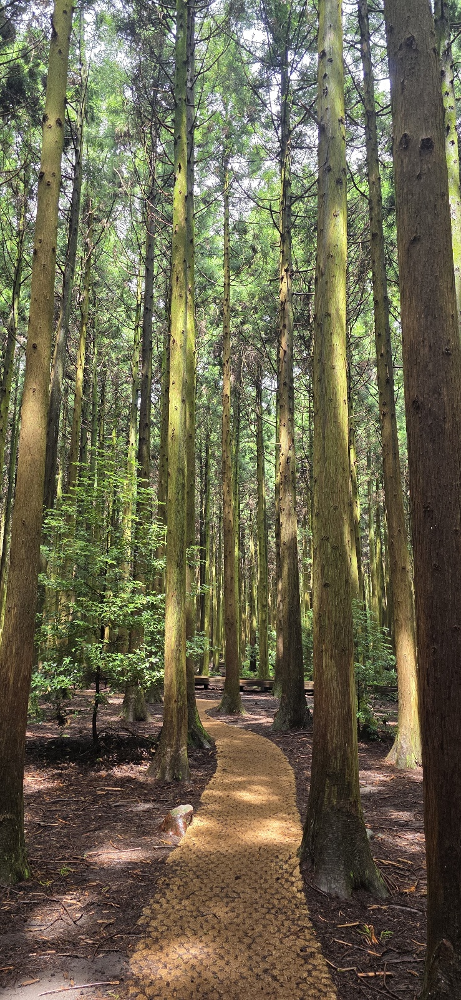
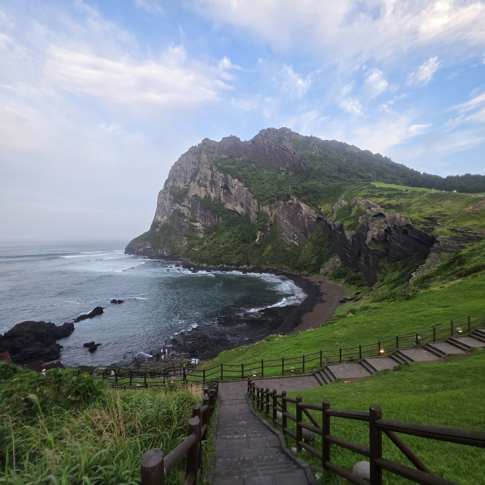
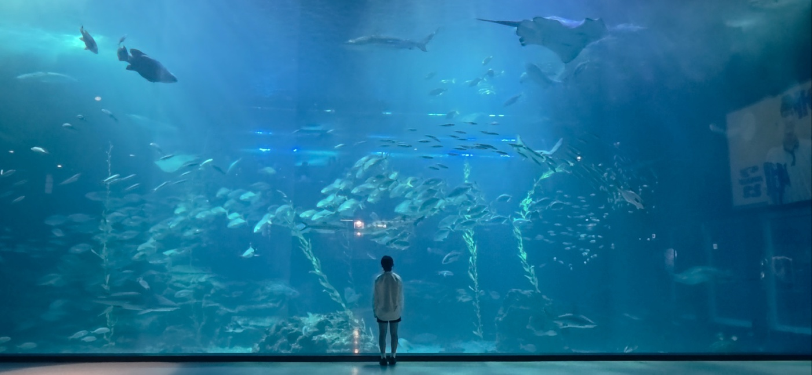
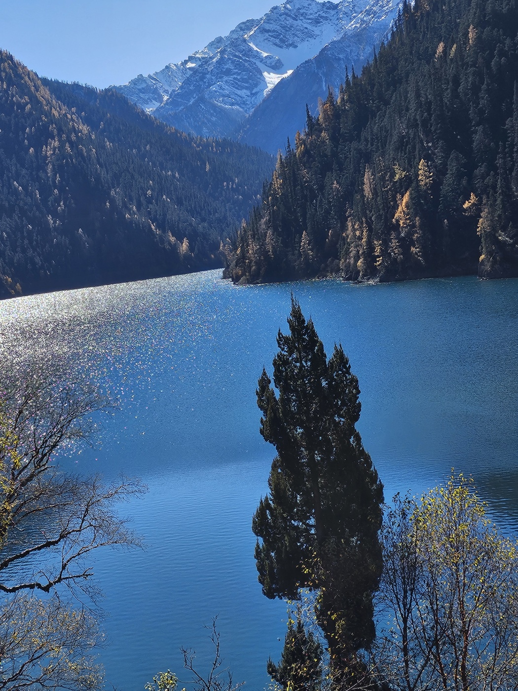
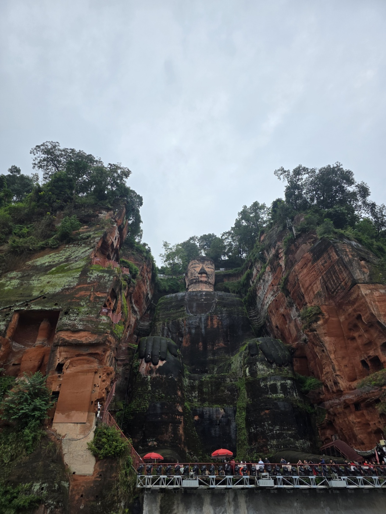
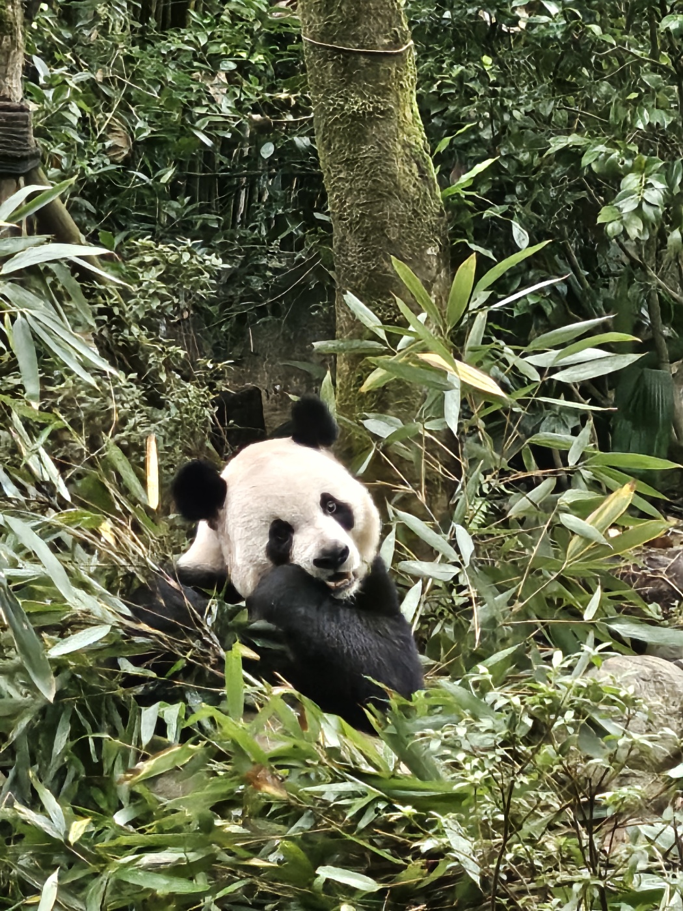
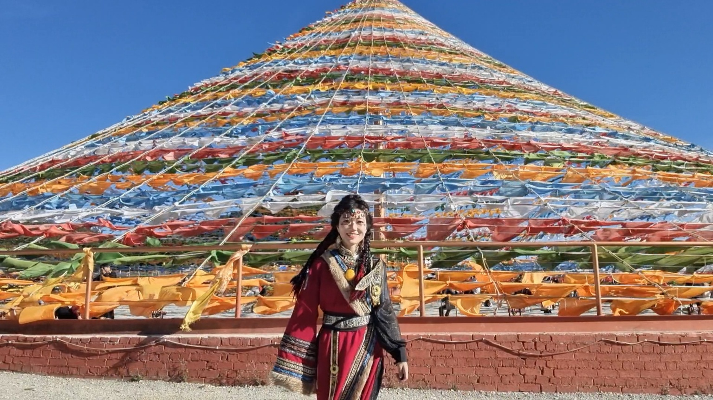
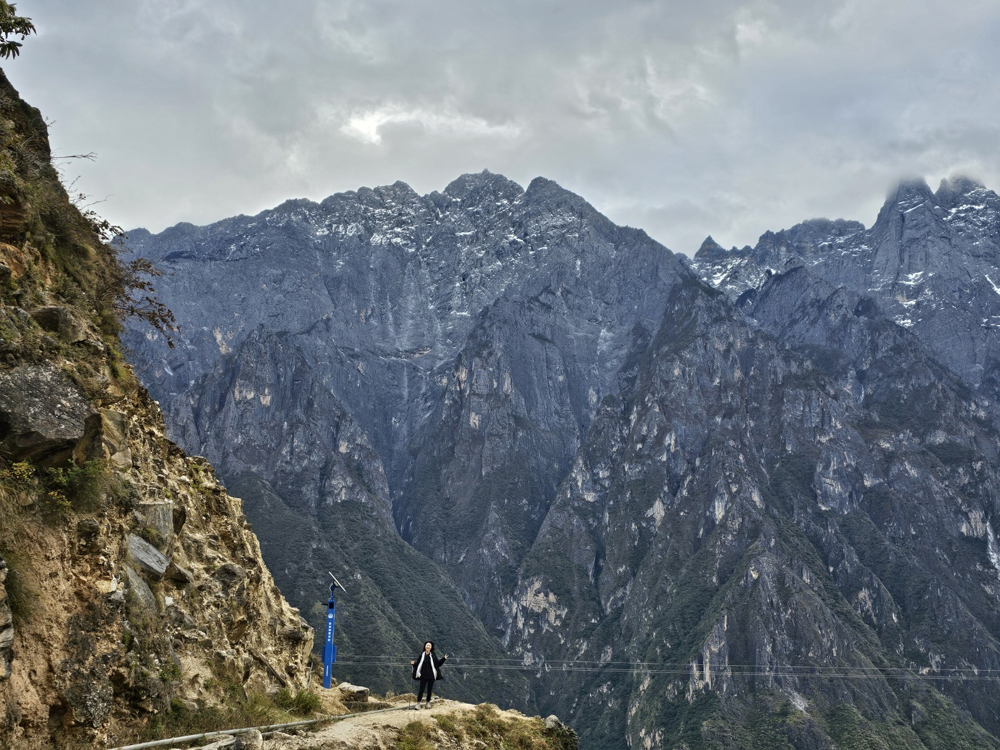
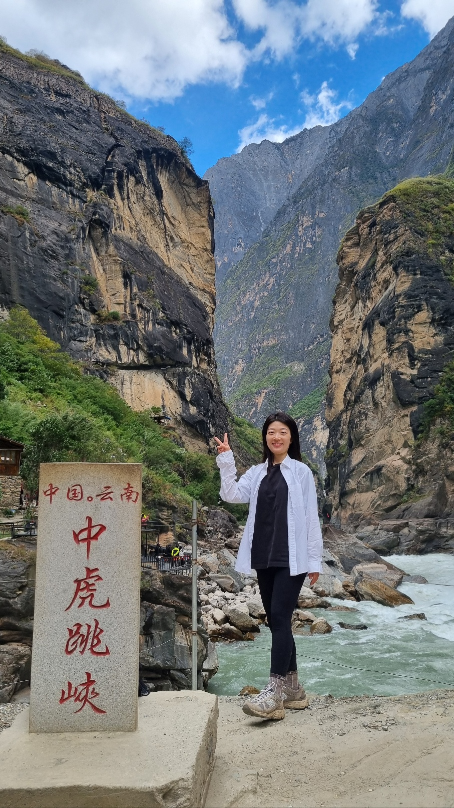

사려니숲
녹음이 우거진 숲길을 하염없이 걸어도 좋았던

성산일출봉
숙소에서 성산일출봉까지 러닝✅

아쿠아플라넷 제주
다음엔 수족관멍 반나절은 해야겠음

구채구
아름다운 물 + 중국사람들 실컷 구경한

낙산대불
부처님 잘되게 해주세요🙏🏻

판다기지
판다보다 렛서판다가 더 귀여웠던

샹그리라
소수민족의 애환이 느껴졌던 곳

옥룡설산
거대한 자연앞에서 저절로 겸손해지던

호도협
천국의 계단 타다가 천국가는 줄...
아쿠아플라넷 제주에서 1시간 동안 수족관멍하며 찍은 영상 🐠